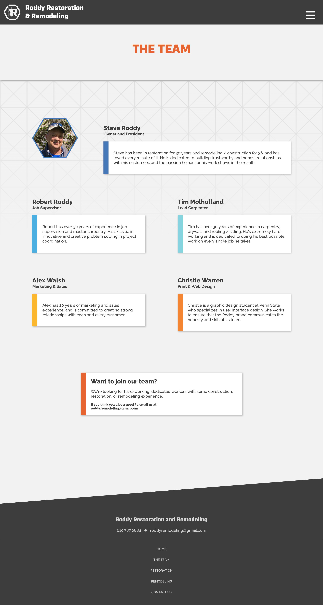
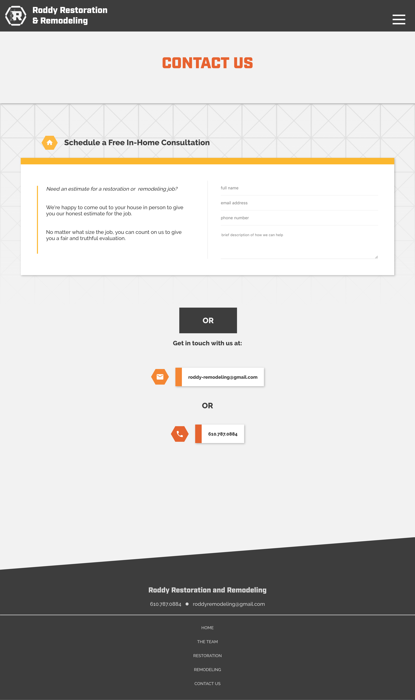

Roddy Restoration & Remodeling
Construction you can trust.
Role: Graphic & Web Designer
Branding: November 2016 - January 2017
Web: June 2018 - Present
I first started working with Roddy Restoration & Remodeling when they were looking to redefine their brand in 2016. At that time I created a logo and some print designs for them.
In June 2018, I began working with them again, this time to create a website for customers to view their info and previous work
Customer Relationships are Key
It's so important to build good customer relationships in the construction industry. Still, a lot of these companies don't have user-friendly websites, and in today's world, being a customer without proper online info is incredibly frustrating.
I want customers to understand exactly what the company does at a glance, and see the quality of the work.

Bringing Personality to the Roddy Name
The people on this team, Steve especially, are really personable and care a lot about the work they do and who they do it for. I want to convey this through the site, so customers know who they're talking to and who's behind The Name.
Basic Info + The Facts
A site like this should be straightforward rather than complex, and helpful rather than intriguing. I asked Steve to tell me, from his experience, what is the most important information customers want to know, and this is what we came up with.
Without being too cold or too cheesy, this page conveys the value of the team and the restoration services they offer.
Showing Over Telling (In Progress)
This page may look a bit empty, because most of it will be taken up by a gallery of before an after images of the work Roddy's team has done.
Remodeling is very much about the look and feel of the work, so showing customers what Roddy can do should convince them of their value without using too much text.
A Simple Contact Process
I dedicated an entire page to contact, because this is one of the most important aspects of a company's site. It doesn't matter how well a customer is convinced of your value if there's no way to get in touch.
Takeaways
Designing for the Roddy team has allowed me to learn so much about brand consistency and how important it is to make that brand true to the people it represents.
I've also learned how to better narrow information down to the most important details, while still maintaining a personable tone throughout the design.
Roddy's Site Moving Forward
This site is still a work in progress, and the next step will be to go to some of the team's previous jobs to get some more photos of the quality work they do.
As always, I'm really enjoying working with this team, and I'm excited to give them more of a presence online.